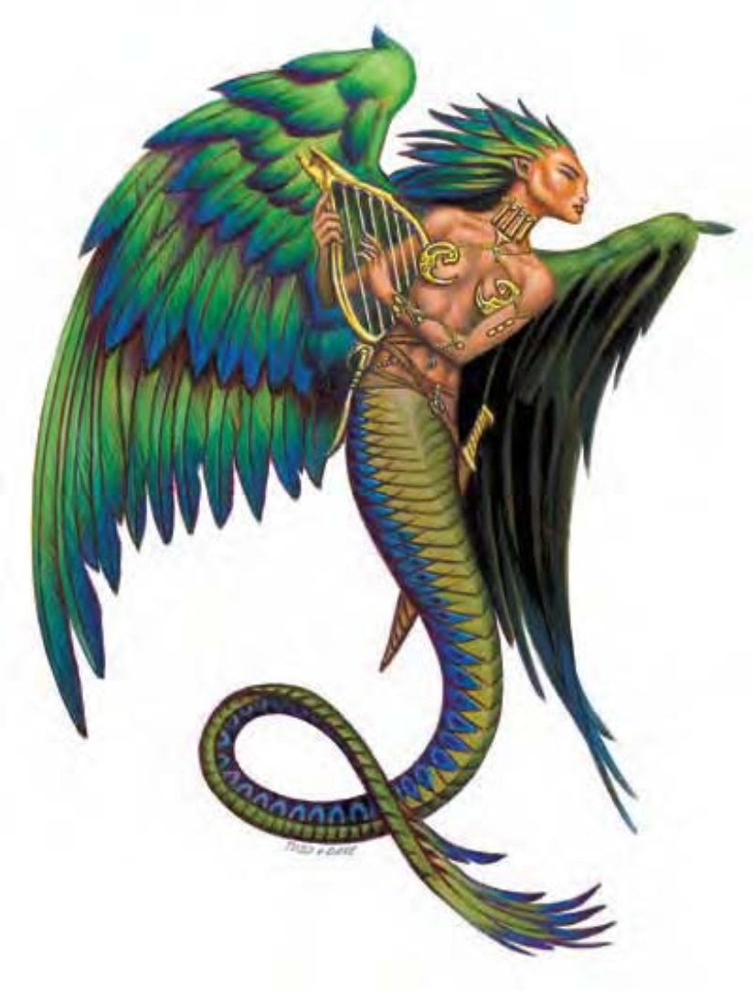

这种生物看起来像是人类或精灵女性，但下半身却像彩色巨蛇，还有一对巨大醒目的鸟类翅膀。
翼蛇人是来自英灵忆逝界的神秘访客。许多翼蛇人都拥有一种以上的艺术表现能力。
翼蛇人热爱音乐与艺术。钱财甚至食物对他们而言都不太有意义，然而歌曲、故事与艺术品却相当珍贵。破坏艺术品或残害艺术家将会激怒她们。翼蛇人会记恨，遭遇他们时，他们多半正对所爱艺术的敌人采取暴力惩戒。
翼蛇人也热爱未受破坏的旷野。旷野令她们想起英灵忆逝界的美丽风貌，因此偶尔会到类似地区观光游憩。对这样的地区翼蛇人也采取对艺术相同的保护态度。这种生物偶尔会与巡林客、德鲁伊与吟游诗人形成暂时的联盟，一同保卫其热爱的居住地，抵御文明的蚕食鲸吞。有些巫妪会的翼蛇人会占据林中小径，用尽所有方法赶走掠夺者。
一般翼蛇人身长20英尺，体重约3800磅。少数翼蛇人有着男性身体。
翼蛇人通晓天界语、炼狱语、深渊语与通用语。
| 资料栏位 | 翼蛇人 (Lillend) 大型异界生物 (混乱、外界、善良) |
| 生命骰 | 7d8+14 (45HP) |
| 先攻 | +3 |
| 速度 | 20英尺 (4格)、飞行70英尺 (普通) |
| 防御等级 | 17 (-1体型、+3敏捷、+5天生)、接触12、措手不及14 |
| 基本攻击/擒抱 | +7 / +16 |
| 攻击 | 短剑+11近战 (1d8+5 / 19-20) |
| 全力攻击 | 短剑+11 / +6近战 (1d8+5 / 19-20) 及 尾巴拍击+6近战 (2d6+2) |
| 占据/触及 | 10英尺 / 10英尺 |
| 特殊攻击 | 紧勒2d6+5、精通擒抱、法术、类法术能力 |
| 特殊能力 | 黑暗视觉60英尺、对毒素免疫、火焰抗力10 |
| 豁免 | 强韧+7、反射+10、意志+8 |
| 属性 | 力量20、敏捷17、体质15、智力14、感知16、魅力18 |
| 技能 | 估价+12、专注+12、交涉+16、神秘知识+12、聆听+13、表演 (任一) +14、察言观色+13、法术辨识+14、侦察+13、生存+17 |
| 专长 | 战斗施法、法术延时、快速反射 |
| 环境 | 英灵忆逝界 |
| 组织 | 单独或巫妪会 (2-4) |
| 宝藏 | 标准 |
| 阵营 | 总是混乱善良 |
| 进化 | 8-10HD (大型)；11-21HD (超大型) |
| 等级修正值 | +6 |
一般而言翼蛇人是爱好和平的生物，除非某人伤害或威胁到喜爱的艺术品或艺术家，他们才会展开报复行动。这会使翼蛇人成为无情的敌人。进入战斗前，他们会以法术或类法术能力先困惑、弱化对手。巫妪会的翼蛇人常会在战前讨论策略。
在计算伤害减免时，翼蛇人的天生武器与持有武器都视为混乱阵营与善良阵营。
紧勒 (特异)：一旦通过擒抱检定，翼蛇人即可造成2d6+5点伤害。翼蛇人将用整着下半身进行紧勒，因此紧勒的同时不能进行移动动作，但仍可持剑攻击。
精通擒抱 (特异)：如果翼蛇人利用尾巴拍击击中对手，即可利用即时动作进行擒抱攻击，且不会引发对方借机攻击。如果擒抱成功，则可定住对手进行“紧勒”。
法术：翼蛇人施秘法术时视同6级吟游诗人。
一般已知吟游诗人法术 (3/4/3；豁免检定DC=14+法术等级)：
零级――“舞光术”、“晕眩术”、“侦测魔法”、“瞌睡术”、“法师帮手”、“阅读魔法”；
一级――“魅惑人类”、“治疗轻伤”、“检定术”、“睡眠术”；
二级――“人类定身术”、“隐形”、“音鸣爆”。
类法术能力：每天3次――“黑暗术”、“幻景” (DC=18)、“敲击术”、“光亮术”；每天1次――“魅惑人类” (DC=15)、“动物交谈”、“植物交谈”。施法者等级10。豁免检定DC的调整值与魅力调整值相同。
翼蛇人也拥有6级吟游诗人的吟唱能力。
技能：翼蛇人在进行“生存”检定时具有+4种族加值。